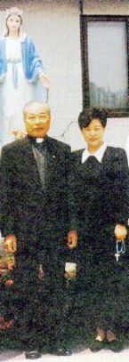
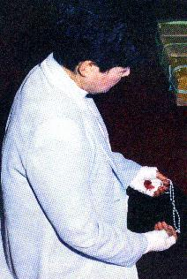
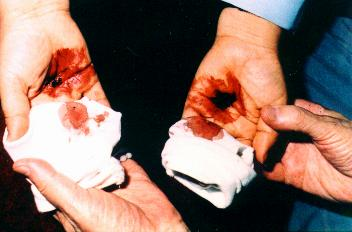
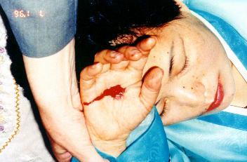
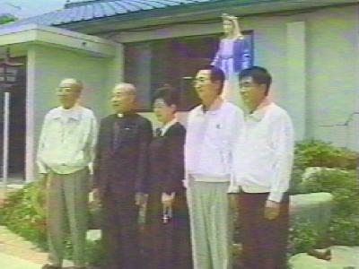
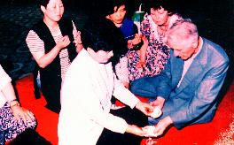

UN NOM
- Dans la petite ville de Naju, dans au Sud-ouest de la p�ninsule Cor�enne,
depuis le 30
UN NOM
- Dans la petite ville de Naju, dans au Sud-ouest de la p�ninsule Cor�enne,
depuis le 30
juin 1985 se
sont pass�s des manifestations surnaturelles qui ont laiss� le monde entier
plein d'enchantement et perplexit� avec la grandeur du z�le Divin en prouver la
V�rit� Chr�tienne et en montrer surtout- � travers de NOTRE DAME - qu'IL aime
chacun de SES enfants dans une mani�re sp�ciale et qu'IL veut le retour de notre
amour. Malgr� notre faiblesse et nos limitations, IL veut que nous LE d�montrons
les dimensions de notre amour.
Pour cette charmante mission
Divine, le SEIGNEUR a choisi Julia Kim comme SON interpr�te devant l'humanit�,
pour transmettre � toutes les personnes, la derni�re Volont� du CR�ATEUR.
Le Voyant a r�sume - avec ses
propres mots - sa vie et sa rencontre avec DIEU et la VIERGE MARIE.
JULIA KIM - Quand je
me souviens du pass�, mon esprit est plein de surprise et d'admiration � cause
de la Providence Divine.
Je suis n�e le 3 mars 1947, � Naju, en
Cor�e du Sud. � quatre ans d��ge je vivais en parfait et complet bonheur
avec mes parents et ma famille, jusqu'aux jours heureux qui
ont fini quand a commenc� la guerre Cor�enne. Mon p�re, mon
grand-p�re et ma s�ur plus jeune sont morts. Moi et ma m�re sommes les
survivants et nous avons que faire des efforts pour vaincre avec pers�v�rance la
pauvret� et les difficult�s de plusieurs natures, pour survivre et d'ex�cuter la
mission de notre vie. En 1972, j'ai �pous� Julio Kim et de notre mariage sont
n�s deux gar�ons et deux jeunes filles. J'ai eu qu�interrompre mes �tudes dans
le lyc�e, � cause de notre pauvret�, bien que j'aimais �tudier et que je voulais
d�velopper mon �rudition autant que possible. J'avais des probl�mes s�rieux de
sant� pour des longues et douloureuses ann�es, avec des intenses h�morragies qui
ne cessaient pas, en ayant �t� soumise � un nombre sans fin des examens, des
traitements et des chirurgies sans succ�s, parce que dans les derni�res fois ils
ont d�couvert le cancer g�n�ralis� dans mon corps. Ils l'ont annonc� d'une fa�on
formelle et cat�gorique ma condamnation � mort. Les ressources techniques et
l'espoir des sp�cialistes �taient achev�. Cependant, il est n� en moi une
myst�rieuse et impressionnante force int�rieur, parce que je voulais vivre et
aussi je ne voulais pas consterner ma m�re en la transmettant les nouvelles
m�lancoliques, elle qui ne m'avait jamais abandonn� et qui m'avait aid� en tout.
La maladie �tait tr�s forte et se propageait dans tout mon corps. Dans plusieurs
places, ma peau a commenc� � �tre insensible. Ma m�re et mon mari faisaient des
massages dans ces places pour retrouver la sensibilit�. C'�tait mieux mais
quelques fois il restait un certain dormant. La pression art�rielle de mon sang
a baiss� � un niveau alarmant et � cause de probl�mes dans les veines, je ne
pouvais pas ni recevoir des injections, ni avaler un liquide stimulant
alcoolis�. Vraiment ma vie s'�teignait lentement. Beaucoup des femmes qui
appartenaient � l'�glise Presbyt�rienne locale m'ont visit� constamment et elles
m'ont amen� au temple pour prier et alors m'ont rapport� � ma maison, bien qu'en
r�alit� ce que je voulais c'�tait de fr�quenter l'�glise catholique. Un jour,
apr�s m'avoir dit des mots pour me consoler et apr�s sortir de ma pi�ce, deux de
ces femmes ont dit l'une � l'autre:
"Je me sens d�sol�e pour cette pauvre femme, bien que la vie soit une chose
pr�cieuse, sa maladie qui n'a pas de cure, il est en tuant aussi sa famille"
. J'ai pens�: "C'est vrai!
Pourquoi je n'avais pas pens� � �a avant?" J'ai pr�par�
une dose tr�s forte de cyanure de potassium et j'ai �crit sept lettres:
� ma m�re, � mon mari, aux quatre enfants et une � celle qui pourrait
�tre la future femme de mon mari.
LA LUMI�RE DE DIEU A BRILL�-
Je pensais � mon p�re, au temps de ma jeunesse, et
comment accomplir mon plan sinistre, quand mon mari est rentr� � la maison, il
avait venu du travail plus t�t et il m'a dit: "Mon
amour! Quelque chose en moi me dis que nous devons aller visiter l'�glise
catholique".
Sur ce m�me jour nous avons
visit� l'�glise � Naju pour trouver le r�v�rend de la Paroisse, j'ai parl�:
"Pr�tre, si DIEU existe vraiment, je peux affirmer
aussi qu'IL est cruel. Pourquoi est-ce que je dois boire de ce calice amer?
Qu'est-ce que j'ai fait pour m�riter �a?"
Le p�re m'a r�pondu:
"Ma fille, vous recevez une quantit� incomparable de gr�ce dans votre corps. Ce
sont des gr�ces remplies de souffrances et de douleur pour cela ils sont tr�s
sp�ciaux. Je n'ai pas re�u ni un peu de ces gr�ces. Croyez-moi et pensez � cette
v�rit� que je vous dis".
Quand j'ai entendu ces mots, une
r�flexion rapide a fait fermer mes l�vres, pendant que mon visage se manifestait
dans une attitude de cr�dibilit�. J'ai r�pondu avec une voix presque
inaudible:
"Amen".
Jusqu'� ce moment, mon corps
�tait froid et sans vie. Soudainement, il a commenc� � se r�chauffer, la
circulation du sang a augment�, les b�timents du c�ur ont acc�l�r� et je
transpirais partout. Le SAINT ESPRIT a commenc� � travailler en moi.
Nous avons pri� dans l'�glise et
apr�s avoir dit au revoir au pr�tre pour rentrer � la maison, nous avons d�cid�
de joindre la religion Catholique et avec cet objectif, j'ai achet� une Bible,
un livre de pri�res et une petite image de NOTRE DAME dans le magasin de la
Paroisse.
� la maison, j'ai plac� l'image
sur un meuble dans la pi�ce, je l'ai orn� avec une rose et j'ai allum� une
bougie. J'ai pri� et pleur�, j'ai suppli� � NOTRE DAME Sa protection maternelle
et affectueuse.
Dans le troisi�me jour, j'ai
entendu la voix de J�SUS: "Lisez la Bible, c'est mon
vivant Mot".
Imm�diatement, j'ai ouvert la
Sacr�e �criture et exactement dans l'�vangile du SEIGNEUR J�SUS CHRIST �crit par
Saint Luc (Luc 8,40-48), au sujet de la femme qui avait l'h�morragie pour 12
ann�es. Sa foi �tait si grande qu'elle avait dit que si elle ait eu touch�
l'ourlet du v�tement de J�SUS elle serait gu�rie et cela s'est pass� vraiment
quand elle l'a atteint et a touch� l'ourlet du v�tement du SEIGNEUR. Dans la
Bible, c'est �crit que J�SUS lui dit; "Ma
fille, ta foi t'a sauv�e; va en paix". (Luc 8,48)
Dans les vers suivants il y a
l'histoire de la fille de Jaire (chef de la synagogue) qui �tait morte. J�SUS a dit:
"Ne crains pas, crois seulement, et elle sera
sauv�e". (Luc 8,50) Jaire a cru dans le Mot du SEIGNEUR
et sa fille a v�cu de nouveau.
Ainsi, en m�ditant dans toutes
ces �v�nements, j�ai compris que ces mots �taient aussi pour moi, pour cela,
seule dans ma pi�ce j'ai parl� avec conviction:
"SEIGNEUR, je crois; Mon DIEU, je crois sinc�rement dans Votre Amour".
Nous avons fr�quent� le
Cat�chisme Paroissial et nous avons �tudi� (mon mari et moi) les fondements de
la doctrine, en nous pr�parant pour recevoir le Bapt�me dans quelques semaines.
Alors le CR�ATEUR a fait un
grand miracle... J'ai �t� gu�rie du cancer et de tous les maux qui infestaient
mon corps. J'�tais si heureuse que je ne savais pas le que faire pour remercier
DIEU. J'�tais pleine de satisfaction et impressionn�e avec tr�s grande
gentillesse et compassion du SEIGNEUR. J�ai senti la volont� de courir, de
voler, de s��lever dans une plus haute colline pour �tre beaucoup de pr�s du
CR�ATEUR et crier, crier sans cesser, avec toutes les forces de ma petit et
fragile c�ur, avec tout la ferveur et la tendresse la plus profonde de mon �me,
un cri
sonore et rempli de un immense amour, en disant:
"Je vous aime mon
DIEU, je vous adore, VOUS �tes la lumi�re de ma vie, mon amour et mon
tout".
C'�tait la mani�re que mon
pauvre esprit plein de joie a choisi faire, pour manifester ma gratitude sinc�re
et passionn�e � DIEU et � NOTRE SAINTE M�RE.
J'ai commenc� � fr�quenter
l'�glise catholique avec assiduit� et int�r�t. J�ai entr�e dans le Mouvement
Charismatique et dans la L�gion de Marie parce que je voulais �tre bien c�t� du
SEIGNEUR et de NOTRE M�RE TRES SAINT, pour exercer un apostolat en l'honneur et
l'�loge de notre DIEU et NOTRE DAME. Mon organisme �tait parfait et mon humeur
au travail �tait enviable. J'ai ouvert un salon de coiffure pour aider dans
l'entretien de la maison. Mon existence a gagn� une nouvelle vie et j'�tais une
nouvelle personne pleine de bonheur et id�ale.
D�s alors, J�SUS a r�tabli ma
sant� compl�te et merveilleusement. Le 30 juin 1985, les manifestations
surnaturelles ont commenc�, avec les larmes de l'image de NOTRE DAME, aussi les
larmes de sang, de l'huile parfum� qui sortait de la t�te de la petite image, la
gr�ce que le SEIGNEUR m'a allou� les souffrances dans les occasions d�finies par
LUI, les stigmates de la passion de J�SUS CHRIST dans mes pieds et dans mes
mains, les douleurs terribles de la crucifixion, tout pour la conversion des
p�cheurs, en r�paration pour cause de les abominables avortements qui sont faits
et aussi par le b�n�fice des �mes du purgatoire afin de qu'elles puissent monter
au ciel. Ensemble de toutes ces �v�nements, aussi sont advenus les
extraordinaires et admirables Miracles Eucharistiques. Une cr�ature pauvre et
indigne comme moi, le SEIGNEUR m�a allou� l'honneur de r�aliser dans ma propre
bouche, le Myst�re de la Transsubstantiation. Dans la Saint Masse, le Hostie et
le Vin Consacr�s, sont transform�es par le SPIRIT SAINT, dans le Corps et Sang
vivant de J�SUS, bien qu�ont rest� les apparences ext�rieurs de pain et vin.
Pour la Volont� Divin, dans divers fois, lorsque j�ai re�u la Sacr� Communion
dans la Saint Masse, l�Hostie Consacr� sur ma langue s�est transform� dans le
Corps et Sang de notre bien-aim� et ador� DIEU.
Le SEIGNEUR est ma lumi�re et
salvation. IL est le propre Amour que est n� et a grandi dans notre vie. C'est
un Amour Charmant, Beau, plein de passion mais qui demande la fid�lit� et le
sacrifice. Pour faire la fleur de l'amour fleurir et �tre jolie, il faut vaincre
les difficult�s et aimer sans �tablir conditions, d�affronter le froid tranchant
de l'hiver et accepter avec r�signation et courage, les douleurs qui nous
visitent continuellement, en imitant les martyrs de la m�me fa�on qu'ils offrent
leur vie pour le plus grande honneur et gloire du CR�ATEUR.
C'est pour cela que je veux �tre
la consolatrice du SEIGNEUR, j'accepte toutes les douleurs et sacrifices pour
apaiser les d�ceptions et tristesses du C�ur Divin � cause des transgressions
et indiff�rences de nos fr�res qui n'ont pas encore trouv� la Lumi�re de DIEU:
"En v�rit�, en
v�rit�, je vous le dis, si le grain de bl� qui est tomb� en terre ne meurt, il
reste seul: mais, s'il meurt, il porte beaucoup de fruit". (Jean 12,24-25)


Les douleurs de la crucifixion sont
tellement grandes que Julia s�est �vanouie. - Chapelle de Naju.

Frei Spies examine les blessures aux
mains du Voyant.

Page Suivante
 Page
Ant�rieure
Page
Ant�rieure
Revient
� l'Index